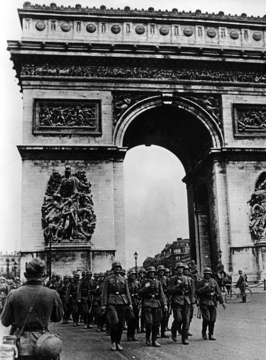
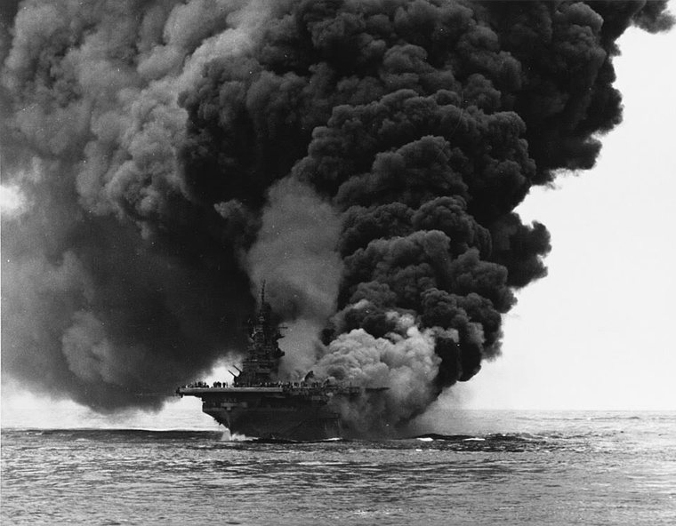
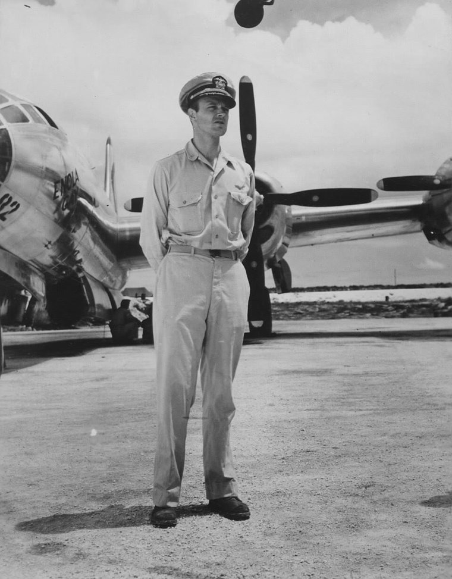
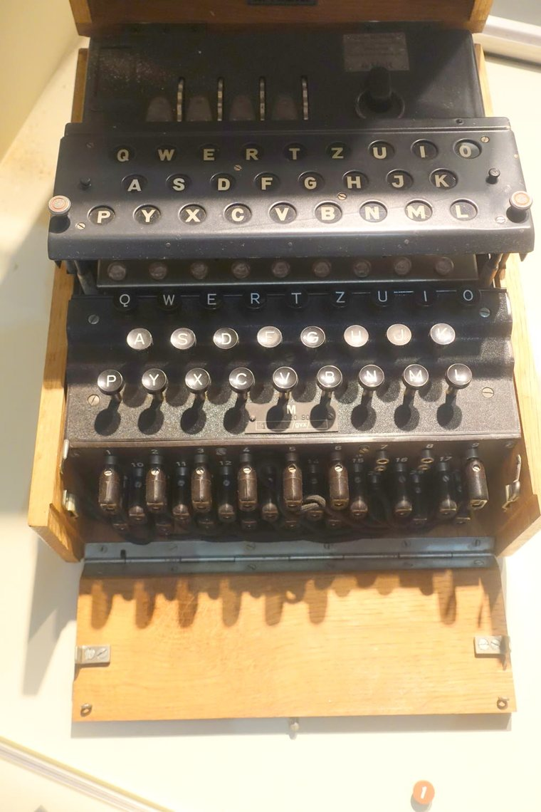
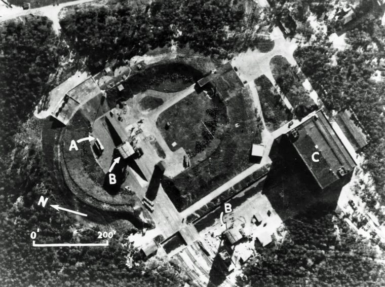
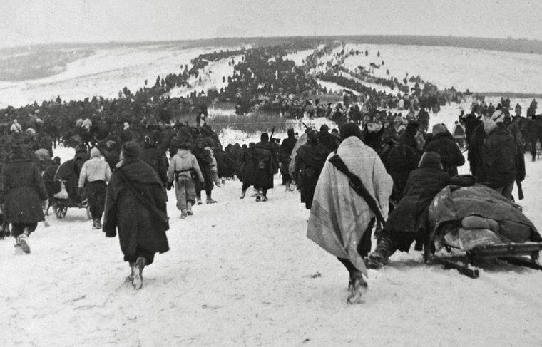
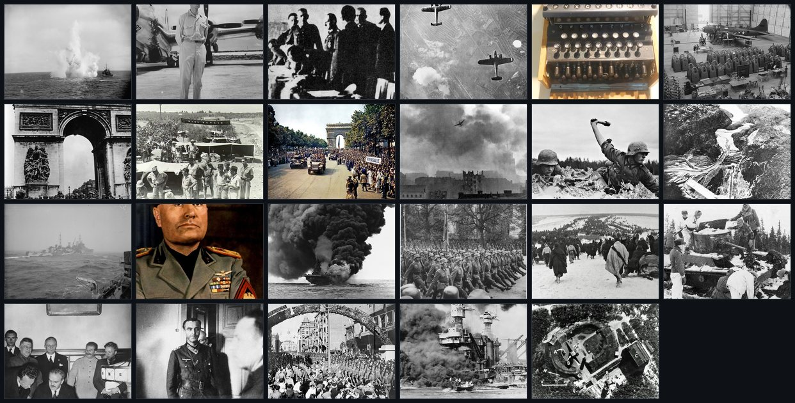
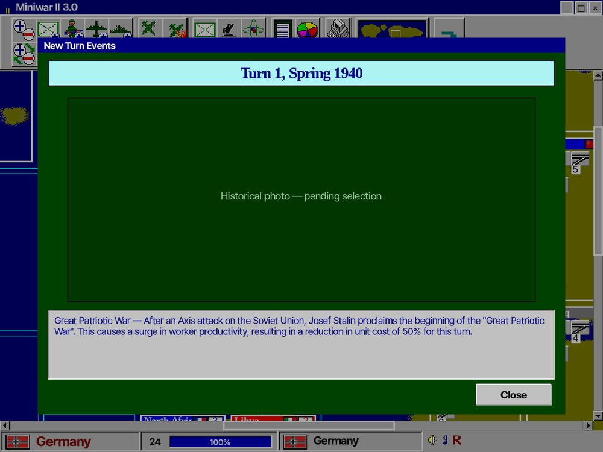
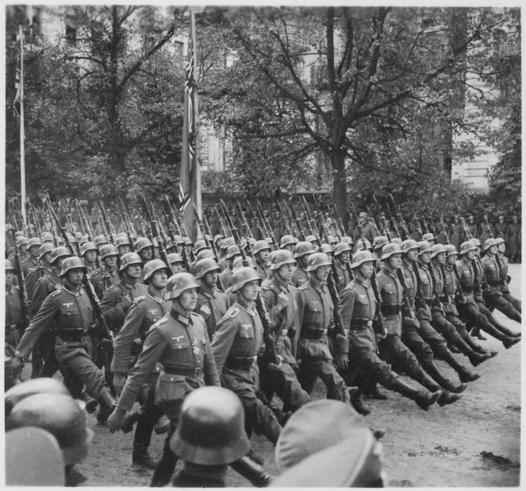

원작의 26개 이벤트를 winwar2.exe 문자열에서 원문 그대로 추출했습니다. 각 이벤트는 발생 문구·사진 캡션·역사 해설로 구성되며, 엔진은 라운드 스케줄과 게임 상태 조건으로 이를 발동합니다.
이벤트는 classic_engine.gd의 _evaluate_events()가 매 국가 턴에 평가합니다. 발동 방식은 두 갈래 — 고정 라운드(예: 라운드 4 핀란드)와 상태 조건(예: 소련이 공격받으면 대조국전쟁). 각 이벤트는 once 플래그로 1회만 발동합니다.
| 이벤트 | 발동 | 효과 |
|---|---|---|
| 핀란드의 독일 동맹 | 라운드 4 · 스칸디나비아 중립일 때 | 스칸디나비아 → 독일 |
| 대조국전쟁 | 조건 · 소련이 공격받으면 | 이번 턴 소련 유닛 비용 −50% |
| 스탈린의 애국 방송 | 라운드 6 · 소련 참전 상태 | 소련 자원 +40 |
_select_recovered_turn_event가 라운드 1에 독일 재무장(라인란트) 브리핑을 띄우고, 이후 실제 진행에 따라 사진을 분기합니다(폴란드 침공→바르샤바, 프랑스 침공→파리). 이벤트가 없는 턴에는 시대배경 백드롭 10종으로 폴백합니다.

"The German occupation of France sends shock waves throughout the world. German troops march through the streets of Paris."
프랑스 본토 함락 시 발동. 점령국은 비시 정부 수립을 선택할 수 있으며, 프랑스 지역 자원 절반을 얻는 대신 추축 승리 시 최종 점수 페널티를 집니다.
"The Japanese begin a campaign of suicide air attacks known as Kamikaze. Fighters that kamikaze are destroyed, but have double attack strength."
일본 전투기의 자폭 공격을 해금합니다 — 파괴되지만 공격력 2배, 전함·항모 격침 확률이 높아집니다.


"…has discovered the secret of atomic power. Atomic bombs may now be used in strategic bombing runs."
핵개발 완료 후 폭격기가 원폭을 투하할 수 있습니다. 대상 지역의 가치·생산력을 영구히 떨어뜨립니다.
"The US has broken the Japanese and German codes! They are able to out-maneuver their opponents. The US receives a +10 advantage in naval battles."
에니그마 해독을 반영 — 미국 해전 명중에 +10 보정. 원작 해설은 U-보트에서 노획한 에니그마 기계를 언급합니다.



각 엔진 이벤트에 공개도메인/CC 역사 사진을 배정했습니다. 최대 1000px로 다운스케일해 브리핑 서술상자 위에 표시합니다.


